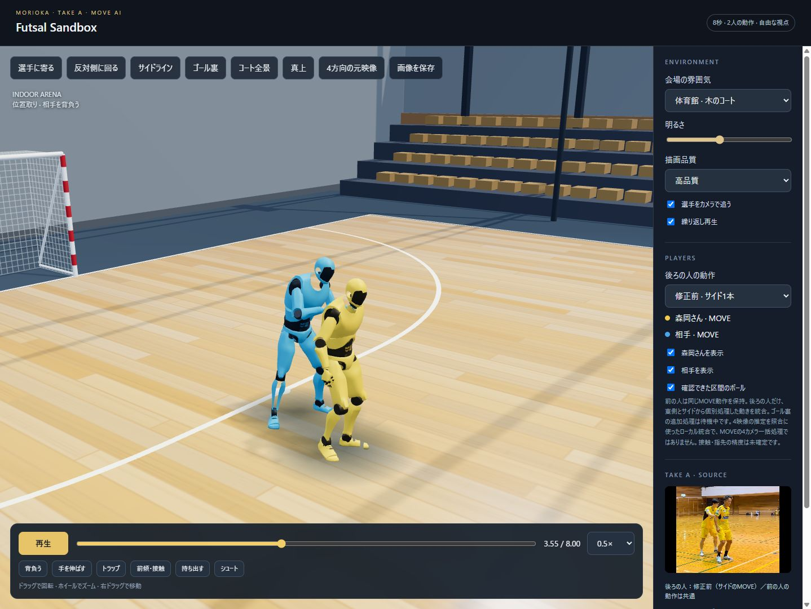
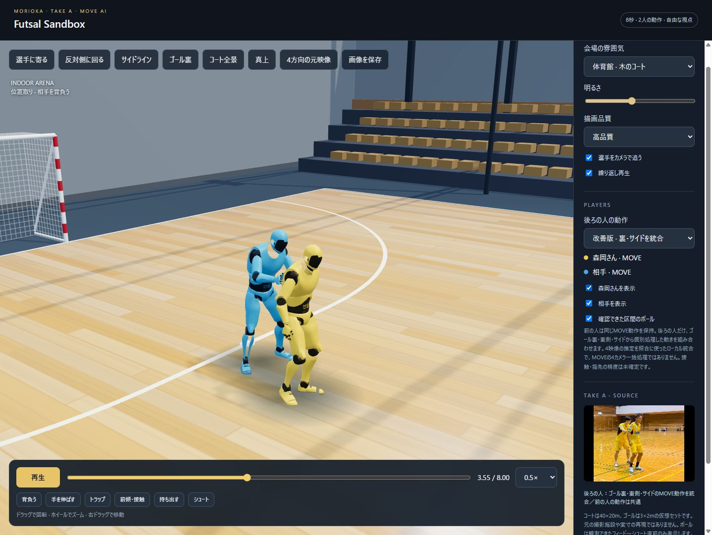
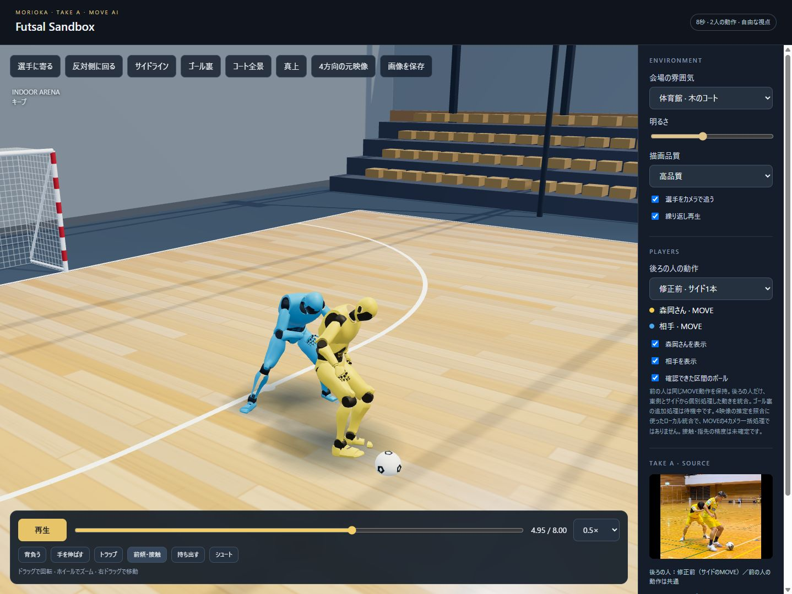
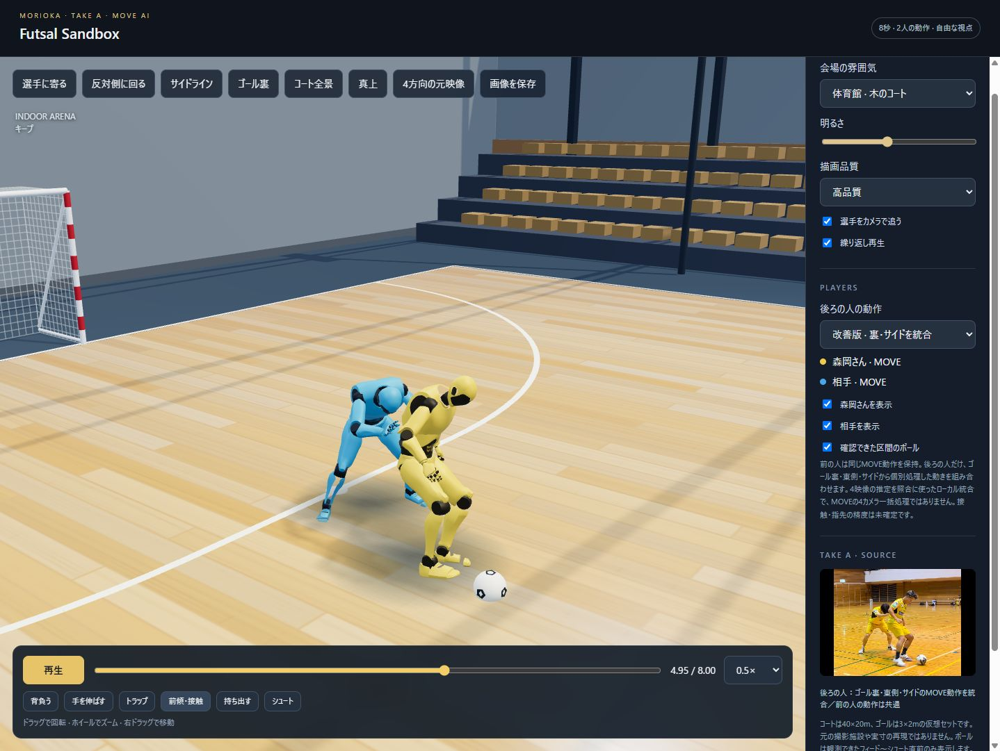

森岡さん · Take A
前の人を保持して、後ろの人を別方向から照合
「後ろの人の動作」で修正前・統合版・各方向の出力を切り替え。「反対側に回る」で隠れた側へ移動できます。「4方向の元映像」で実際の撮影映像を比較できます。
手を伸ばす · 3.55秒


前傾・接触 · 4.95秒


黄色の森岡さんは共通の元データです。上の静止画はゴール裏＋東側＋サイドの比較記録。3D画面には最新の処理状況・料金を表示します。4映像からの推定を参照したローカル統合で、MOVEの4カメラ一括処理ではありません。隠れた指先、手と体の接触、実寸の精度は未確定です。すべての場面が改善したという意味ではなく、修正前も残しています。